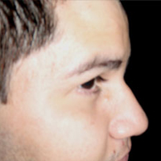

About
- Julio Gálvez
- Colima, México
- Emprendedor
- Desarrollador Web
Skills
- PHP
- Django
- CSS
- HTML
- jQuery
- MySQL
- PhoneGap
- AJAX
Flepix es un sitio para compartir imágenes entre personas con un interés en comúm; por ejemplo:
En un concierto, los asistentes pueden subir sus fotografías en
una misma galería creada en Flepix, de esta forma todos comparten su felicidad en un mismo lugar =D
TieGps es una App para dispositivos móviles, muy simple y sencilla de utilizar. Se trata de un un control de clientes que además guarda la ubicación GPS del usuario; para de esta forma tener el control de lugares visitados, y evitar posible información falsa; incluye funcionalidades como: